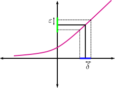
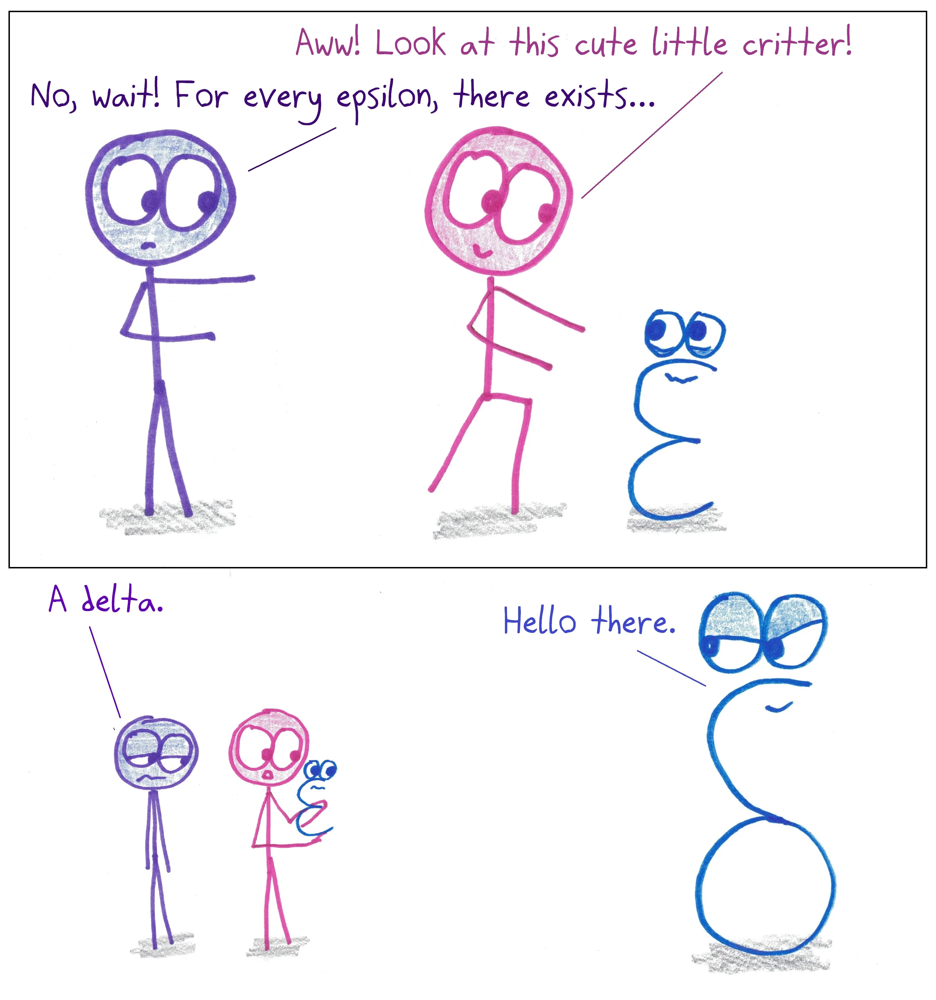

2.4. Límites#
2.4.1. Definición de límite#
La definición formal de límite fue un paso adelante gigantesco en la matemática finalizado en el siglo XIX. Es el concepto más importante en el cálculo, ya que prácticamente en todas las demás definiciones (continuidad, derivadas, integral de Riemann, series, etc.) aparece algún límite.
El concepto de límite expresa la tendencia de una función cuando su variable se aproxima a un cierto valor. Newton ya lo formulaba en 1666 diciendo que la idea principal de límite es que las cantidades se acerquen más que cualquier cantidad dada. Partiendo de la idea de Newton, vamos a recorrer en unas líneas un camino de más de 200 años.
Para comenzar, introduciremos la definición en el caso más sencillo, que es el límite finito en un punto.
Necesitamos un requisito técnico. Vamos a suponer que tenemos una función, \(f\), que está definida alrededor de un punto, \(x_0\in\mathbb{R}\), aunque no tiene que estar definida en dicho punto. Es decir, suponemos que existe \(r>0\) tal que \((x_0-r,x_0)\cup(x_0,x_0+r)\subset\mathrm{Dom}f\).
Queremos definir \(\displaystyle\lim_{x\to x_0}f(x)=l\), lo que, avanzando un poco desde la definición de Newton, sería algo como:
Definición tentativa 1: Podemos hacer que \(f(x)\) esté tan cerca como queramos de \(l\) tomando \(x\) suficientemente cerca de \(x_0\).

Pero esta definición no es estricta, en un sentido formal. ¿Qué quiere decir tan cerca como queramos? ¿Y suficientemente cerca? Debemos dar un paso más.
Definición tentativa 2: Eso de que \(f(x)\) esté tan cerca como queramos de \(l\) puede escribirse mejor diciendo para cualquier distancia pequeña, \(\epsilon\), alrededor de \(l\). Y en cuanto a lo de \(x\) suficientemente cerca de \(x_0\), se puede expresar diciendo que existe una distancia pequeña, \(\delta\), alrededor de \(x_0\).
Ya podemos escribir una definición más formal del límite, con palabras.
Para cualquier distancia pequeña, \(\epsilon\), alrededor de \(l\), podemos encontrar otra distancia pequeña, \(\delta\), alrededor de \(x_0\), de forma que si elegimos \(x\) a una distancia de \(x_0\) menor que que \(\delta\) tendremos que \(f(x)\) está a una distancia de \(l\) menor que \(\epsilon\).
Esta segunda definición se parece bastante a la que Cauchy formuló hacia 1840, y que supuso un avance enorme en las matemáticas. Cauchy decía:
Cuando los valores sucesivos atribuidos a una variable tienden indefinidamente a un valor fijo, de modo que al final difieren de él tan poco como uno desee, a esto último se le llama límite de lo demás.
{kind=link}
Parece ser que el mismo Cauchy también introdujo la notación hoy tan famosa de \(\delta\) y \(\epsilon\)… Ya todo estaba maduro para que finalmente Weierstrass, hacia 1880, diera la definición que hoy conocemos y que suele escribirse utilizando notación matemática. ¿Por qué hacerlo? Hay dos motivos fundamentales. El primero es que la escritura matemática es universal, puede ser entendida por personas de todo el mundo. La segunda es que así conseguimos escribir lo mismo en mucho menos espacio, lo que reduce el tamaño de un libro de matemáticas a magnitudes razonables.
Definition (Definición final)
Esta definición merece un par de comentarios:
La distancia \(\delta\) depende de \(\epsilon\). Si elegimos una distancia \(\epsilon\) muy pequeña alrededor de \(l\) es evidente que \(\delta\) tendrá que ser muy pequeño para que se cumpla la definición. En algunos libros se escribe de forma específica esta dependencia: \(\forall\epsilon>0, \exists\delta(\epsilon)>0\)…
Pedimos que \(0<\left|x-x_0\right|\). ¿Por qué? Es lo mismo que exigir que \(x\not=x_0\). Así evitamos que el punto central, \(x_0\), entre en la definición de límite, con lo que ésta será más general y vale para puntos que pueden no estar en el dominio de \(f\). Esto será esencial, por ejemplo, en la definición de derivada.
Una interpretación gráfica muy frecuente es la que mostramos en la siguiente figura. Las imágenes de todos los puntos en el intervalo azul caen dentro del sector verde.

Así que, recordad, para cada \(\epsilon\) existe un \(\delta\)…
{kind=link}
(Imagen de https://mathwithbaddrawings.com/).
Remark
Si buscas más información sobre la definición de límite puedes consultar
Hay una propiedad interesante, consecuencia directa de la definición de límite:
Property (Unicidad del límite)
Si existe \(\displaystyle\lim_{x\to x_0}f(x)\), es único.
Proof. Demostración: La haremos por reducción al absurdo. Partimos negando la premisa (que el límite sea único) y llegaremos a una contradicción. Supongamos entonces que \(\displaystyle\lim_{x\to x_0}f(x)=l_1\) y al mismo tiempo \(\displaystyle\lim_{x\to x_0}f(x)=l_2\), con \(l_1\not= l_2\). Eligiendo \(\epsilon=\frac{\left|l_1-l_2\right|}{3}\) llegamos a una contradicción (¿por qué?).
\(\Box\)
Seguimos con algunas otras propiedades importantes de los límites.
Property
Sean \(f,g:A\subset\mathbb{R}\rightarrow\mathbb{R}\), \(x_0\in A\). Supongamos que \(f\) está acotada cerca de \(x_0\) y que \(\displaystyle\lim_{x\to x_0}g(x)=0\).
Entonces \(\displaystyle\lim_{x\to x_0}(fg)(x)=0\).
Remark
Queremos destacar de nuevo que \(fg\) quiere decir \(f\) multiplicada por \(g\), NO es la composición. La multiplicación de funciones suele denotarse por la ausencia de símbolos (\(fg\)) o, si se quiere enfatizar, como \(f*g\). La composición se denota como \(f\circ g\).
Property (Propiedades aritméticas de los límites)
Sean \(f,g:A\subset\mathbb{R}\rightarrow\mathbb{R}\), \(x_0\in A\). Supongamos que ambas funciones tienen límite finito en \(x_0\). Entonces
\(\displaystyle\lim_{x\to x_0}\left(\lambda f\right)(x)=\lambda\lim_{x\to x_0} f(x),\qquad\forall\lambda\in\mathbb{R}\),
\(\displaystyle\lim_{x\to x_0}\left(f\pm g\right)(x)=\left(\lim_{x\to x_0} f(x)\right)\pm\left(\lim_{x\to x_0} g(x)\right)\),
\(\displaystyle \lim_{x\to x_0}\left(fg\right)(x)=\left(\lim_{x\to x_0} f(x)\right)\left(\lim_{x\to x_0} g(x)\right)\),
\(\displaystyle \lim_{x\to x_0}\left(\frac{f}{g}\right)(x)=\frac{\displaystyle\lim_{x\to x_0} f(x)}{\displaystyle\lim_{x\to x_0} g(x)}\) si \(\displaystyle\lim_{x\to x_0} g(x)\not=0\).
2.4.2. Límites laterales#
Ahora ya podemos definir los límites laterales. La idea es la misma que acabamos de mostrar, pero ahora elegimos \(x\) que estén o bien a la derecha de \(x_0\) o bien a su izquierda. Entonces el valor absoluto de \(|x-x_0|\) desaparece. El que no puede desaparecer es el de \(|f(x)-l|\), porque, por ejemplo, aunque \(x\) sea menor que \(x_0\), \(f(x)\) puede ser mayor que \(l\) (si la función es decreciente).
Definition (Límites laterales)
Diremos que el límite de \(f\), cuando \(x\) se acerca a \(x_0\) por la derecha, es \(l\) si
\[ \lim_{x\to x_0^+}f(x)=l:\Longleftrightarrow\left[\forall\epsilon>0, \exists\delta>0 \Big/ \; 0<x-x_0<\delta\Longrightarrow\left|f(x)-l\right|<\epsilon\right]. \]Diremos que el límite de \(f\), cuando \(x\) se acerca a \(x_0\) por la izquierda, es \(l\) si
\[ \lim_{x\to x_0^-}f(x)=l:\Longleftrightarrow\left[\forall\epsilon>0, \exists\delta>0 \Big/\; 0<x_0-x<\delta\Longrightarrow\left|f(x)-l\right|<\epsilon\right]. \]
Ilustramos la idea en la siguiente figura:

La siguiente propiedad resulta evidente a la vista de todas estas definiciones.
Property
Existe \(\displaystyle\lim_{x\to x_0} f(x)\) si y sólo si existen \(\displaystyle\lim_{x\to x_0^+}f(x)\) y \(\displaystyle\lim_{x\to x_0^-}f(x)\) y son iguales.
Esta propiedad es de mucha utilidad para funciones definidas a trozos. En los puntos en los que la función cambia de definición, se calculan los límites laterales. Si existen y coinciden, la función tiene límite en ese punto. Si no existe uno de ellos o existen los dos pero no coinciden, la función no tiene límite en ese punto.
2.4.3. Límites infinitos y en el infinito#
Vamos ahora a ver algunas definiciones de límites, cuando alguno de los parámetros es \(\infty\).
Definition (Límites infinitos)
\(\displaystyle\lim_{x\to x_0}f(x)=+\infty:\Longleftrightarrow\left[\forall M>0, \exists\delta>0\Big/ 0<\left|x-x_0\right|<\delta\Rightarrow f(x)>M\right]\),
\(\displaystyle\lim_{x\to x_0}f(x)=-\infty:\Longleftrightarrow\left[\forall M>0, \exists\delta>0\Big/ 0<\left|x-x_0\right|<\delta\Rightarrow f(x)<-M\right]\).

Definition (Límites en el infinito)
\(\displaystyle\lim_{x\to +\infty}f(x)=l:\Longleftrightarrow\left[\forall \epsilon>0, \exists M>0\Big/ x>M\Rightarrow \left|f(x)-l\right|<\epsilon\right]\),
\(\displaystyle\lim_{x\to-\infty}f(x)=l:\Longleftrightarrow\left[\forall\epsilon>0, \exists M>0\Big/ x<-M\Rightarrow\left|f(x)-l\right|<\epsilon\right]\).

2.4.4. Asíntotas#
Vamos a recordar ahora el cálculo de asíntotas para una función.
Definition
Sea \(f:\mathbb{R}\rightarrow\mathbb{R}\).
Diremos que \(x=x_0\) es una asíntota vertical de \(f\) si
\[ \lim_{x\to x_0}f(x)=\pm\infty. \]Diremos que \(y=l\) es una asíntota horizontal de \(f\) si
\[ \lim_{x\to\pm\infty}f(x)=l. \]Diremos que la recta \(y=mx+n\) es una asíntota oblicua de \(f\) si
\[ \lim_{x\to\pm\infty}\big(f(x)-(mx+n)\big)=0. \]
Para saber si una función tiene asíntotas oblicuas, procederemos como sigue. Primero calculamos
si este límite existe y es finito calculamos
Si este segundo límite también existe y es finito, la recta \(y=mx+n\) es una asíntota oblicua de \(f\). Si alguno de los límites anteriores no existe o no es finito, la función no tiene asíntotas oblicuas.
Remark
En todas estas asíntotas si la convergencia se tiene solamente por uno de los dos lados, hablaremos de asíntota por la izquierda o por la derecha.
A modo de ejemplo gráfico, en la siguiente figura la función representada tiene una asíntota horizontal en \(-\infty\), vertical en \(x_{0}\) y oblicua en \(+\infty\).

Nota: Si quieres saber algo más sobre las asíntotas, échale un vistazo a esta entrada del magnífico blog de matemáticas gaussianos.